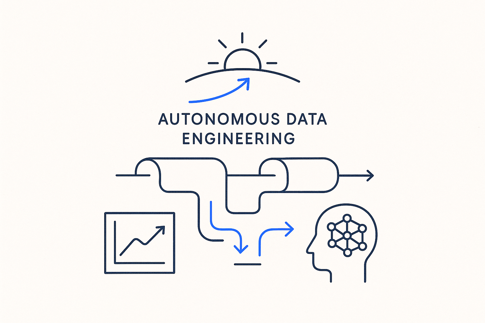

Pipelines that build and adapt themselves from models plus AI — the horizon MDDE points at.

> Pipelines that build and adapt themselves from models plus AI — the horizon MDDE points at.
Autonomous data engineering is the end-state hypothesis: a platform where a model change *is* the change. New source, new attribute, changed business rule — the platform regenerates its own pipelines, tests, and documentation, and AI handles the judgment calls that templates cannot, all within the guardrails the model defines. Human engineers move from writing pipelines to curating models and rules.
The critical distinction from AI hype is the order of operations. Autonomy without structure is vibe-driven AI — plausible output with no contract behind it. MDDE's route to autonomy runs through determinism first: deterministic SQL generation handles everything that can be derived mechanically, and AI is admitted only where the metadata gives it verifiable boundaries. The model is what makes autonomy *safe* rather than merely impressive.
That makes this concept less a technology bet than a maturity ladder: hand-written → generated → self-adapting. Each rung requires richer generative models and a stronger metadata operating system underneath. The horizon is autonomous; the road there is structural.
Where it lives: the AI & innovation horizon of the MDDE thesis — where model-driven generation and AI converge.